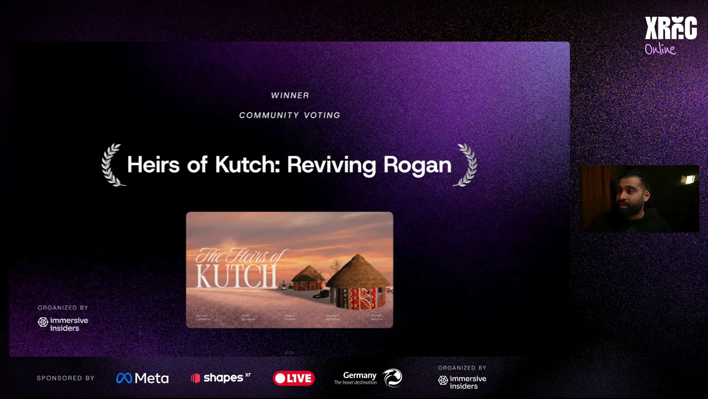
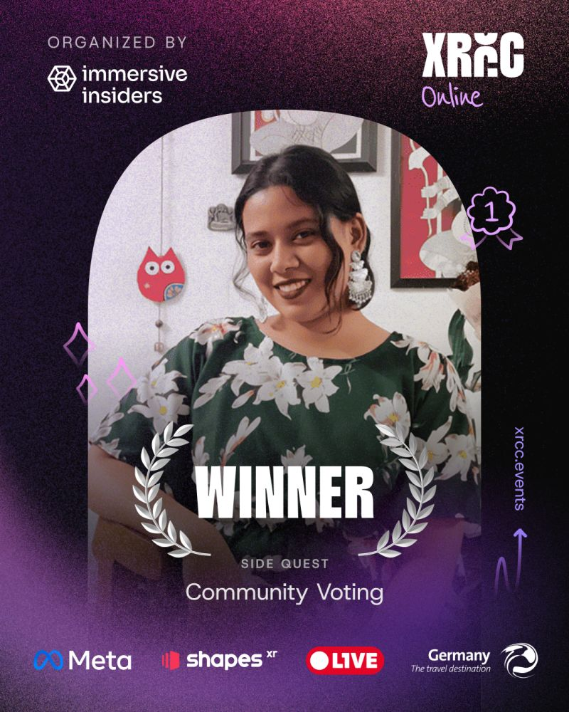

A VR documentary experience preserving the story of Kutch's last Rogan Art family.
Project Presentation
The Last Threads of Rogan Art
Heirs of Kutch is an immersive VR documentary experience that preserves the story of the Khatri family of Nirona, Kutch, the sole remaining practitioners of Rogan Art, a 400-year-old textile painting craft passed down through generations. Built for XRCC (XR Creators Competition) Online, organized by Immersive Insiders and sponsored by Meta and ShapesXR, the experience lets viewers step into the family's world and witness a vanishing art form in the process of being kept alive.
Behind the Experience

The Rogan Art making process

Community Voting Winner announcement

XRCC Finalist Certificate

XRCC winner badge
Community Vote Winner
Reflection
Heirs of Kutch pushed us to treat a real family's living heritage with care. The challenge wasn't just technical, it was earning the right to tell someone else's story faithfully in VR. Seeing it recognized by the XR community, and winning the community vote, was a reminder that craft and technology can amplify each other instead of competing.